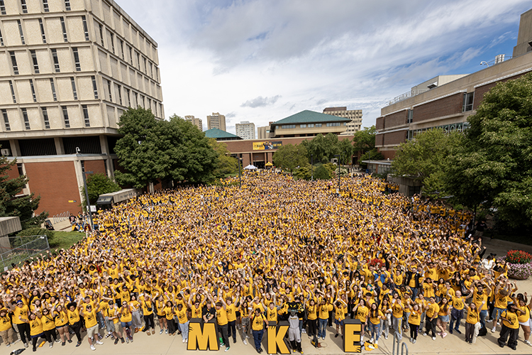

The UWM freshman and transfer class of 2025 gathers in Spaights Plaza for a group photo and welcome message from Chancellor Gibson. (UWM Photo/Troye Fox)
The University of Wisconsin-Milwaukee is celebrating a major enrollment milestone this fall, welcoming 3,871 first-year students to campus — an 11% increase over last year and the highest freshman enrollment since 2009.
“This growth reflects our commitment to creating a welcoming, student-centered environment,” said UWM Chancellor Thomas Gibson. “We’re excited to see more students choosing UWM as their academic home.”